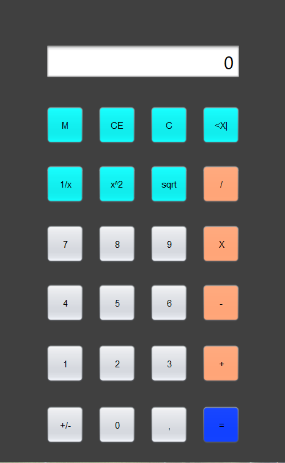
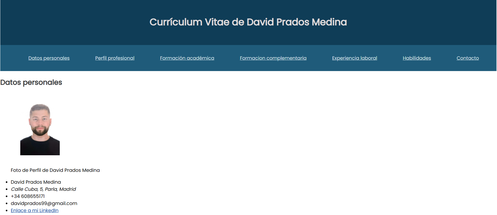
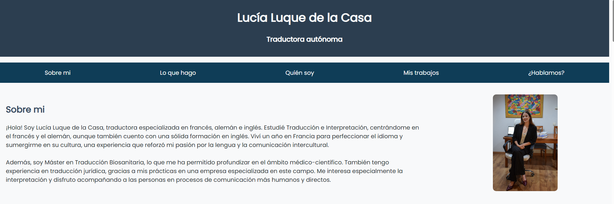

Proyectos

Calculadora - Programación 1º DAM
Calculadora gráfica en Java con Swing, mostrando operaciones básicas y manejo de errores.
Ver en GitHub

Mi Currículum Vitae Web - Lenguaje de marcas 1º DAM
Currículum interactivo en HTML y CSS, diseñado para mostrar mi experiencia y formación.
Ver en GitHub

Web profesional de Lucía, traductora e intérprete - Proyecto intermodular 1º DAM
Proyecto intermodular con HTML, CSS y PHP, usando MySQL para la gestión de datos, desarrollada en XAMPP.
Ver en GitHubAnálisis de Lesiones de Futbolistas (2019-2023) - Proyecto Big Data
Análisis completo de lesiones de futbolistas usando AWS Glue, EMR y S3 para procesar datos, y Power BI para visualización de resultados.
Ver en GitHub